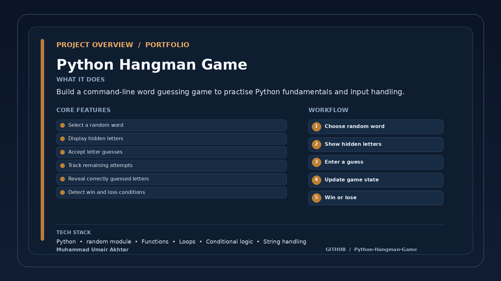

PROJECT 12 / PORTFOLIO
Python Hangman Game
Build a command-line word guessing game to practise Python fundamentals and input handling.

Project Overview
Build a command-line word guessing game to practise Python fundamentals and input handling.
Key Features
- Select a random word
- Display hidden letters
- Accept letter guesses
- Track remaining attempts
- Reveal correctly guessed letters
- Detect win and loss conditions
Project Workflow
Choose random word → Show hidden letters → Enter a guess → Update game state → Win or lose
Technologies Used
Scope & Notes
The game uses a predefined word list unless the source is extended with additional word sources or difficulty options.
Explore the code.
The complete source code and project files are available in the GitHub repository.
Open GitHub ↗